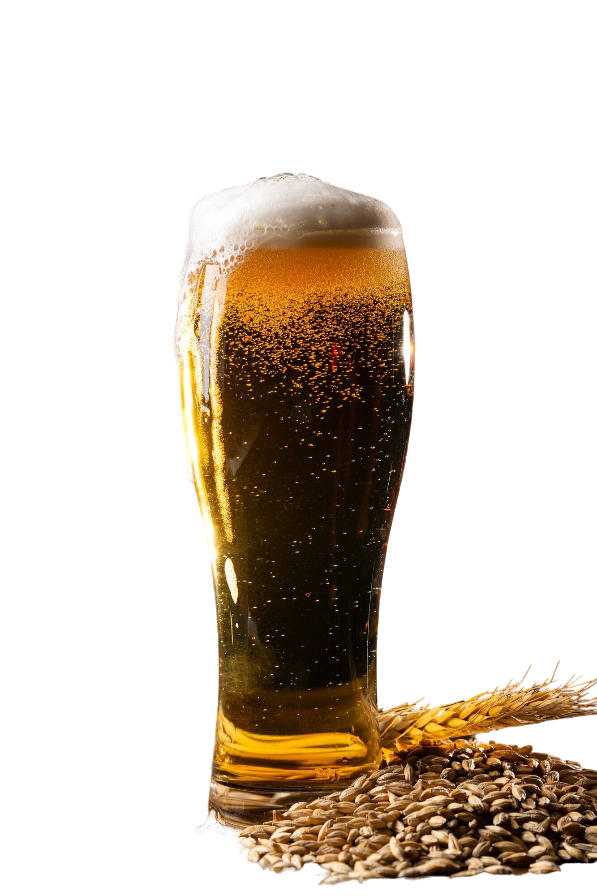
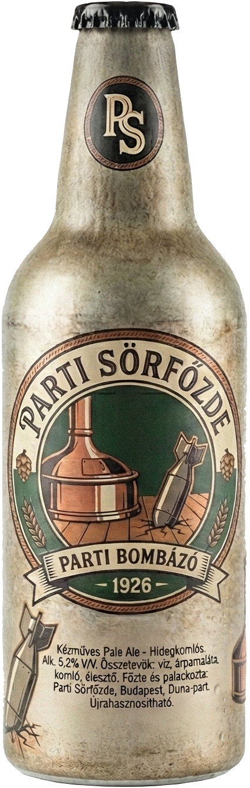

Parti Sörfőzde
1926 ÓTA Családi hagyomány és minőség minden kortyban!

Parti Sör
Ebben a palackban 100 év családi hagyománya és a tiszta, aranysárga komló találkozik. Felejtsd el a kapkodást: mi türelemmel és szívvel főzzük, hogy minden kortyban érezd a valódi, kézműves minőséget.

Rólunk
Családi vállalkozásunk idén ünnepli fennállásának 100. évfordulóját. A sörfőzdét nagyapánk alapította, és jelenleg mi, az unokák vezetjük az üzemet, tiszteletben tartva az eredeti receptúrákat és a hely történelmét.

Az alapítás – 1926
A sörfőzde építését az 1920-as évek elején kezdték meg, a hivatalos átadásra pedig 1926-ban került sor. Az üzemcsarnok falán ma is látható az eredeti fotó a megnyitóról, ahol nagyapánk és az alapító csapat átvágta a zöld szalagot, elindítva ezzel a termelést. A "Parti Sörfőzde" név már ekkor összeforrt a minőségi sörfőzéssel a környéken.

A háborús évek – 1944
A sörfőzde működése az első két évtizedben zavartalan volt, azonban a második világháború eseményei közvetlenül érintették az üzemet. 1944-ben, egy légitámadás során találat érte a főépületet. Egy bomba átszakította a tetőszerkezetet, és a főzőház közepén, közvetlenül az üstök mellett fúródott a földbe. Szerencsés véletlen folytán a szerkezet nem robbant fel. A tűzszerészek később hatástalanították és elszállították az eszközt, így a berendezések épségben maradtak.

A megszállás – 1945
A front átvonulása és a szovjet csapatok bevonulása után az üzem élete újabb fordulatot vett. 1945-ben a hadsereg lefoglalta az épületkomplexum egy részét. Hónapokon keresztül a sörfőzde raktárai és melléképületei laktanyaként szolgáltak az itt állomásozó katonák számára. Ebben az időszakban a termelés szünetelt, az eredeti funkció csak a csapatok kivonulása után állhatott vissza fokozatosan.

A jelen – 2026
A háború utáni évtizedekben a főzde sikeresen újraindult, és átvészelte a későbbi politikai és gazdasági változásokat is. Bár a technológiát az évek során modernizáltuk, a főzőház elrendezése és az alapvető eljárások a régiek maradtak.